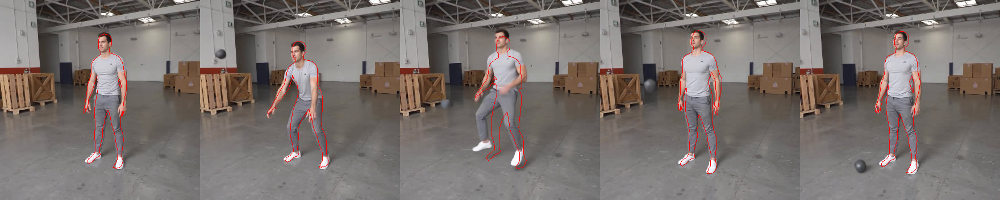
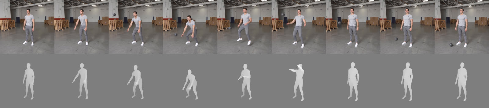

Exp 4 · Photoreal output, animation as control — splitting what to do from what to look like
Did the split work?
Two things had to be true before any result here means anything: every video is a photorealistic single person, and the depth control actually holds the pose where it says it does. Both are true.
Frame 76 of all sixty clips at a glance. Six motions down, ten clips each — five
conditions at two seeds.
This matters because it removes a confound rather than producing a result. Nothing on the pages that follow is muddled by the video model fighting an appearance it has never seen.
2. The control holds where you pin it — and only there#
Joint error against the input motion, root-relative, in millimetres, on the same neutral body — split into the frames that were conditioned and the frames left free:
dense
K = 8
K = 5
K = 3
K = 2
on the conditioned frames
76
76
82
80
86
on the frames left free
77
85
101
117
132
(means over the ten clips that lift correctly; squat excluded)
The five depth control tracksdense to K2
s1234
The five depth control tracks for one motion. Dense on the left, then progressively
blanker: on a free frame the track is mid-grey.
At 77 mm overall, with the pinned and free numbers identical, dense is copying uniformly.
Control silhouette over the generated bodydense — pixel for pixel

s1234
The control silhouette laid over the generated body at dense — pixel for pixel.
dense against its controlsame frames, side by side

s1234
dense output against its control, same frames side by side.
It copies the mistakes too. box_heavy's input puts both arms over the head at frame 72, in a pose no one lifting a box would produce, and dense reproduces it exactly. That is the brief's prediction confirmed: specify the pose everywhere and the video model contributes nothing of its own.
Every squat row must be discounted. Note also that its error falls as conditioning is removed — 350 → 291 mm — purely because the man squats less and standing is easier to recover. That is not an improvement in anything.
An alternative sparse encoding — holding the conditioned pose across the whole latent frame it belongs to, rather than as a single-frame impulse — was built, run and rejected on the evidence. It would remove the blow-out, but it was not what the brief specified and it changes what the control means, so the production runs use the literal impulse encoding.
impulse against hold encodingthe rejected alternative
 s1234
s1234